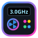

Pironman PilotControl panel for a Raspberry Pi 5 in a SunFounder Pironman 5 MAX case: the OLED screen, the tower and side fans, the RGB lights and safe overclocking.
Only for a Pi 5 in a Pironman 5 MAX case. Install it once (asks for your password):bash ~/Desktop/"My Apps"/apps/pironman-pilot/install.sh
Then it runs in the background and opens from the Pironman Pilot icon (menu: System Tools).